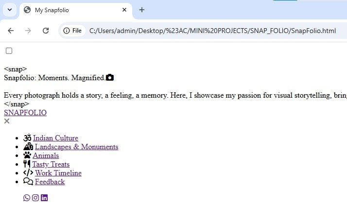
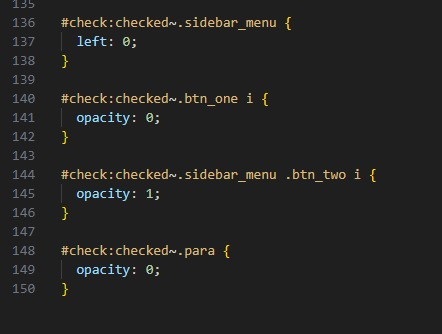
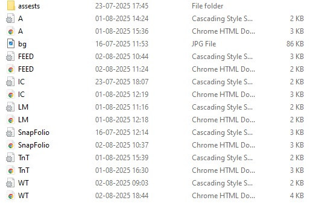
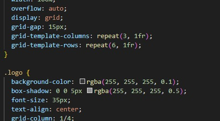
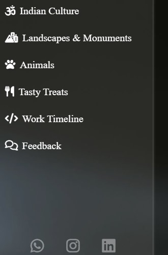

1. The Journey from a Blank Page to Snapfolio
This is where the journey began. Starting with a completely blank slate, the initial idea was to create a Photo Gallery giving it a name of portfolio that could be none other than a SnapFolio. The focus was on setting up the basic structure and defining the project scope before diving into the details.

2. Key Skills and Competencies
I was responsible for the front-end development, using HTML5 to build a robust page structure and CSS to create a clean, modern aesthetic. To solve the challenge of creating a responsive navigation menu that was both intuitive and efficient, I implemented checkbox properties. This creative solution enabled users to easily access different sections.

3. Essential Tools and Technologies
I relied on several key tools. Visual Studio Code was my primary code editor. As this is my first Mini-Project the basic fundamentals over HTML5 and CSS are my most powerfull tools that helped me complete this project. As I am currently in the learning phase of Javascript. So I have used various HTML files using different Anchor Tags for linking.

4. Overcoming the Development Challenges
No project is without any challenges. I encountered many difficulties while tackling with CSS layout using grid properties, flex-box properties etc. Especially when I was working on sections having photo gallery. But still I was not able to create a perfect website that can be used across various devices without any problem. This helped me figuring out that I need to have detail learning on topic Media Queries.

5. Key Takeaways and Learnings
The biggest takeaway from this project was the importance of planning and modular coding. I learned that breaking down a complex problem into smaller, manageable tasks makes the development process much smoother. I have also gained deep knowledge of using different Fonts and Beautiful icons to make the Web Page look good and attractive.
